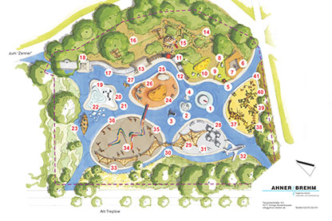

Von den kreativsten Köpfen unserer Erde erdacht:
begeisterte Kinder
{kind=link}
{kind=link}
{kind=link}
Extra groß, Traumlage, phantasievoll und für alle:
Wenn Kinder Spielplätze entwerfen.
{kind=link}
{kind=link}
Was ist besser als ein kleiner Kinderspielplatz?
Ein großer Kinderspielplatz.
Der Weltspielplatz ist ein Projekt des Bezirksamts Treptow-Köpenick und des MyTheo e.V.
Er ist der größte von Kindern erdachte Spielplatz und das engagierteste Projekt, um Kinder aus aller Welt zusammen zu bringen. Gemeinsam wollen wir eine bessere Welt für unsere Kinder schaffen, Mauern in den Köpfen einreißen und dafür sorgen, dass Kinder einen Ort haben, an dem sie miteinander aufwachsen und Spaß haben, egal woher sie kommen. Helfen Sie uns das Projekt zu finanzieren.
Von der Idee zur Planung
Erste Planungsideen entwickelte das Grünflächenamt bereits 2009. Da zum Spielplatzkonzept die Einbeziehung von Kindern verschiedener
Herkunft gehörte, suchten wir international ausgerichtete Schulen, die sich an der Umsetzung beteiligen wollten. Die BBIS (Berlin Brandenburg International School) haben wir schließlich für dieses Projekt ausgewählt. In drei Workshop Sitzungen entwickelten die jungen Schüler der BBIS aus 12 Nationen zwischen 11 und 16 Jahren viele Bebauungsvorschläge. Die Ideen der Kinder sind, wie könnte es anders sein, kreativ, bestechend einleuchtend und lebensfroh.
Ihre erste Aufgabe war, die Kontinente unserer Erde auf ihre Wesensmerkmale zu reduzieren. Doch schon bei den Kontinentumrissen folgten sie mehr der Intuition als der Realität. Sie entschieden sich für eine freie Darstellung. Statt die realen Kontinentumrisse 1:1 umzusetzen, legten sie die Formen der Kontinente so an, dass sie zu den nachfolgenden Ideen passten und die Baufläche optimal ausgenutzt wird. So einfach sieht die Welt für Kinder aus!
Im nächsten Schritt entwickelten sie aus den Ikonen der Kontinente einzigartige Spielgeräte.
Dazu stellten sie sich die Frage: ‚Was fällt mir als erstes ein, wenn ich an diesen Kontinent denke?ʻ Im Folgenden sollen die herausragendsten Spielgeräteideen aufgezählt werden. Neben diesen gibt es für jeden Kontinent noch viele weitere Spielgeräte, die hier dokumentiert sind.
{kind=link}


Nord-Amerika
Nord-Amerikas Wolkenkratzer sind das Sinnbild des Kontinentes. Keine große Stadt kommt ohne sie aus. Umgesetzt in großen Klettertürmen mit Röhrenrutsche, Kletterebenen und Verbindungsgängen.
Süd-Amerika
Für Südamerika planten sie ein mit Atzteken-Schätzen verziertes Fußballfeld inmitten der Anden. Das Fußballfeld ist schon fertig und es wird fleißig gekickt.


Australien
In Australien soll der Ayers Rock (auch: Uluru) als mächtiger Kletterstein aufgebaut werden. Eine australische Schülerin hatte außerdem die Fledermausschwärme im Abendrot lebhaft in Erinnerung. Sie entwarf eine Fledermausschaukel.
Afrika
Afrika soll eine am Kletterbaum fressende Giraffe bekommen. An ihren Beinen klettert man auf ihren Rücken, den langen Hals entlang, schwingt sich in den Kletterbaum weiter oder rutscht an ihrem Hinterteil nach unten.


Asien
Die Kinder wählten als Merkmal für Asien die Chinesische Mauer, eingebettet in einen Dschungel, in dem ein Kletterparcour aufgebaut ist. Ein friedlicher Tiger wohnt darin. Man kann auf seinen Rücken klettern und über die Zunge herunter rutschen.
Nord- und Südpol
Im Südpol gibt es putzige Pinguine zum Wippen. Der Nordpol wird mit der Forscherstation der zentrale Treffpunkt alle. Ein überdachtes, mehrstufiges, kreisrundes, 10 Meter breites Sitzmöbel, leicht erhöht, so dass man nach allen Kontinenten einen guten Blick hat.


Europa
Für Europa steht ein großes gelbes Stück löchriger Käse. Ein echter Hingucker zum Durchkriechen und -rutschen. Doch wieso Käse für Europa? Den Kindern fiel auf, dass kein anderer Kontinent so viele verschiedene Käsesorten hervorgebracht hat wie Europa.
Ozeane
Die Kontinente sind durch blaue Zwischenwege getrennt. Sie symbolisieren die Ozeane. Doch sie sind leicht überwindbar! Die Überwindung von Grenzen ist ein wichtiges Anliegen des Weltspielplatzes.

Pädagogik
Ein Spielplatz ist ein wichtiger Treffpunkt für Kinder wie für Eltern. Ein Forum zum Austausch der Eltern miteinander, unter freiem Himmel, umgeben von fröhlichem Kindergeschrei. In der Mitte auf dem Nordpol, der überdachten Sitzlandschaft, hat man einen guten Blick auf das Geschehen und eine Basis für Unterhaltungen mit anderen.
Der Weltspielplatz bietet mit seinem großen Platzangebot den Kindern viel Abwechslung. Die vielen Betätigungsfelder bieten Ihren Kindern unzählige Anreize die Koordination zu trainieren, soziale Fähigkeiten zu entwickeln und aktiv die Welt zu erforschen, statt passiv vor dem Fernseher den Nachmittag zu verbringen.
Die Kontinente sind durch blaue Zwischenwege getrennt. Sie symbolisieren die Ozeane. Doch sie sind leicht überwindbar! Die Überwindung von Grenzen ist ein wichtiges Anliegen des Weltspielplatzes. Unsere national-wirtschaftliche Ausrichtung auf immer globaleres Handeln erfordert ein immer stärkeres Abbauen von Grenzen im Kopf und ein wachsendes Verständnis von anderen Kulturen und fernen Ländern.
Der Weltspielplatz versteht sich mehr als nur der größte von Kindern erdachte Spielplatz von Berlin zu sein. Er sieht seine Aufgabe vor allem in der pädagogischen Entwicklung von weltumspannender Völkerfreundschaft und kultureller Toleranz. Der Spielplatz wird ein Zentrum für Kinder und Eltern sein, die die ganze Erde als ihr Zuhause sehen.


Panorama
Bewege Dich durch das Panorama mit dem Mauszeiger oder Deinem Finger.
Bewege Dich durch das Panorama mit dem Mauszeiger oder Deinem Finger.
Umsetzung
Das Planungsbüro AHNER/BREHM wurde von uns beauftragt die Ideen, Basteleien, Skizzen und 3D Computermodelle der Kinder zu konkretisieren, damit die Aussagekraft der Kontinente, die Bespielbarkeit und eine gleichmäßige Verteilung der verschiedenen Spielgerätetypen für alle Altersgruppen gegeben ist: klettern, schaukeln, wippen, rutschen, schwingen, verstecken, hangeln, kriechen, drehen, buddeln, kommunizieren und lernen. Sie waren bei den Workshops dabei, stellten Fragen und staunten über die Kreativität der Kinder. Auch wurde die für die jeweiligen Kontinente passende Bepflanzung geplant. So gibt es gibt den Dschungel, die Savanne und das Outback.
Die Grundflächen und die Pflanzungen sind bereits zum größten Teil hergestellt. 2013 wurde der Weltspielplatz mit Berti Vogts eröffnet. Die Finanzierung erfolgte bis dahin aus Landes-, Bundes- und EU-Mitteln. Bereits 560.000 Euro sind in die Anlage investiert worden. Mit dem Geld wurde die gesamte Fläche erschlossen: Kontinente und Wege angelegt, Sand-, Rasenflächen und Steinbegrenzungen hergestellt sowie Gehölze und Stauden gepflanzt.
Die ersten Spielgeräte sind auch schon eingesetzt. Die Kinder warten auf den Rest. Wenn die Kinder über das Geld bestimmen könnten, wäre der Spielplatz längst fertig. Hören Sie auf die kindliche Stimme und helfen Sie uns bei der Umsetzung. Spenden Sie hier.
Lassen Sie uns die Welt als Spielplatz für Kinder im idyllischen Areal des Treptower Park errichten. Ein Ausflugsort innerhalb der großen Stadt für die ganze Familie, mit Restaurants, Bootsverleih, großen Wiesen und Wasser. Und wenn die Dämmerung anbricht beginnt das schönste Abendkonzert von Berlin, vorgtragen von der größten Nachtigallenpopulation der Stadt.
Der Treptower Park, eine kleine, heile Welt in Berlin.
Der Weltspielplatz, eine kleine, heile Welt im Treptower Park.
Wir haben eine Spendenseite bei BetterPlace.org eingerichtet, eine Fundraising Seite die schon vielen NPOs geholfen hat, Gelder für gemeinnützige Projekte zu sammeln. Sie können ohne sich zu registrieren spenden und erhalten eine Spendenquittung.
Wir suchen auch nach Sponsoren, die ein ganzes Spielgerät bezahlen wollen. Warum nicht einen Milchproduzenten den Käse in Europa finanzieren lassen?
Unser Engagement
Der Spielplatz befindet sich im Treptower Park auf Höhe der Insel der Jugend, die
über die Abteibrücke erreichbar ist. Diese Brücke ist auch als „Brücke der Herzen“
bekannt. Fast 50 blaue Herzen sind in die Brücke eingelassen. Jedes ist eine Ehrung
für Unternehmen und Prominenten, die sich sehr mit ihren Mitteln für die Förderung von Kindern eingesetzt haben. Darunter sind bekannte Namen wie Franz Beckenbauer, Rolf Zuckowski und Kurt Krömer. Hinter der Brücke der Herzen steht der Verein „MyTheo e.V.“, eine Offensive von dem Team um den blauen herzensguten Freund vieler Kinder in aller Welt: Theo Tintenklecks.
Theo Tintenklecks und das Amt Treptow-Köpenick engagieren sich sehr an diesem Fleck
der Erde einen Begegnungsort für Kinder aller Kulturen zu errichten. Gemeinsam
wollen wir eine bessere Welt für unsere Kinder schaffen, Mauern in den Köpfen
einreißen und dafür sorgen, dass Kinder einen Ort haben, an dem sie miteinander
aufwachsen und Spaß haben, egal woher sie kommen. Helfen Sie uns das Projekt
zu finanzieren. Alles Geld das wir sammeln fließt in die Umsetzung des
Weltspielplatzes ein.